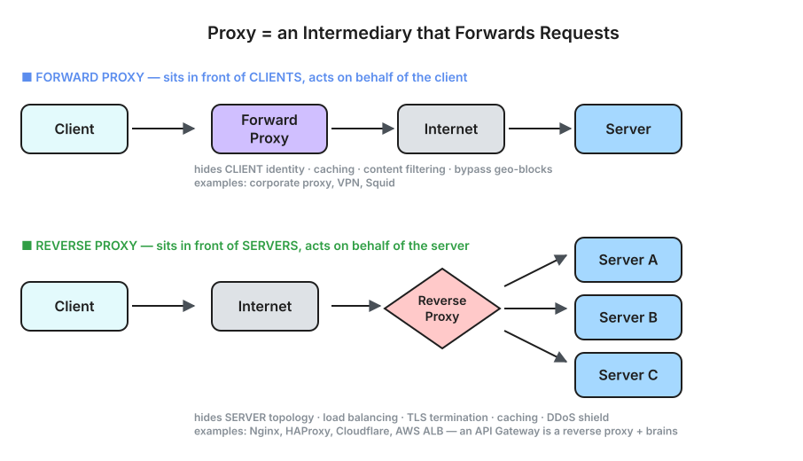
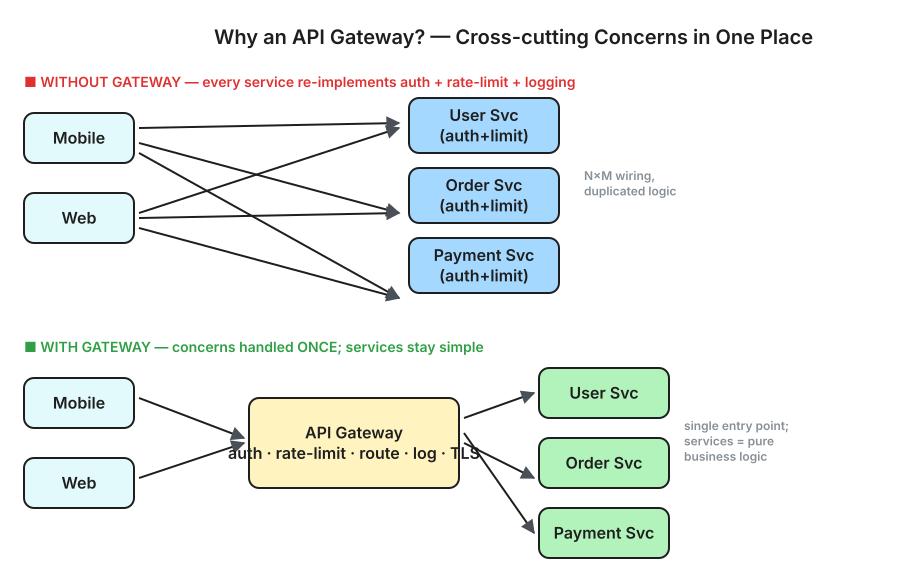
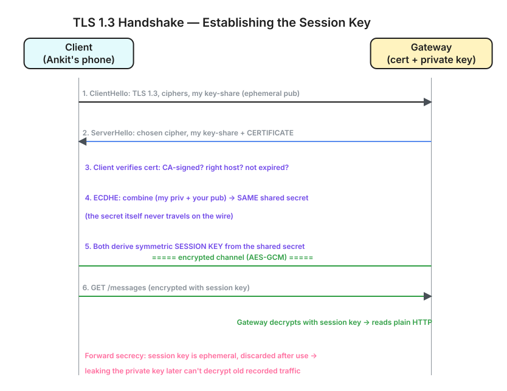
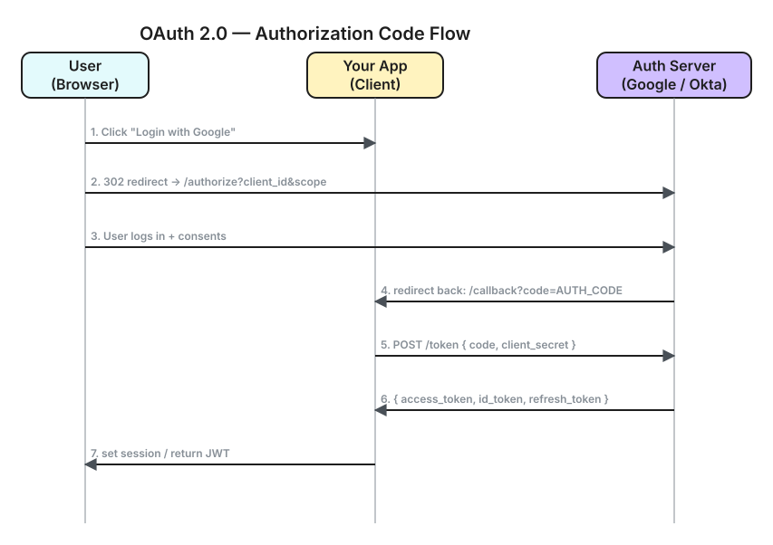
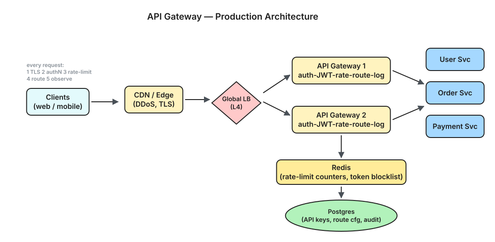
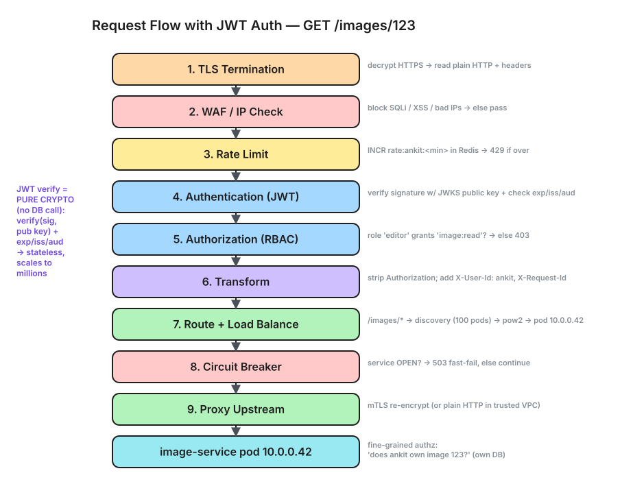
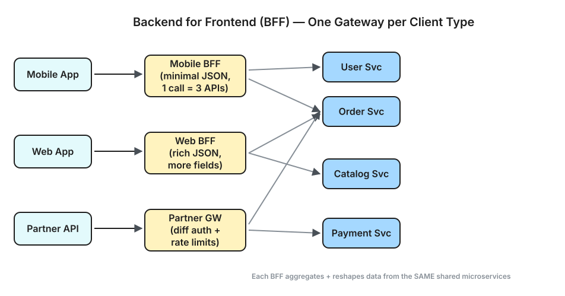
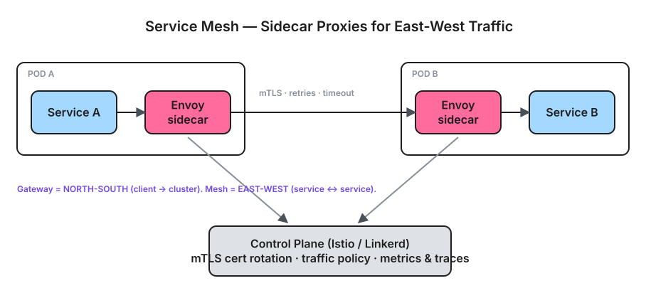
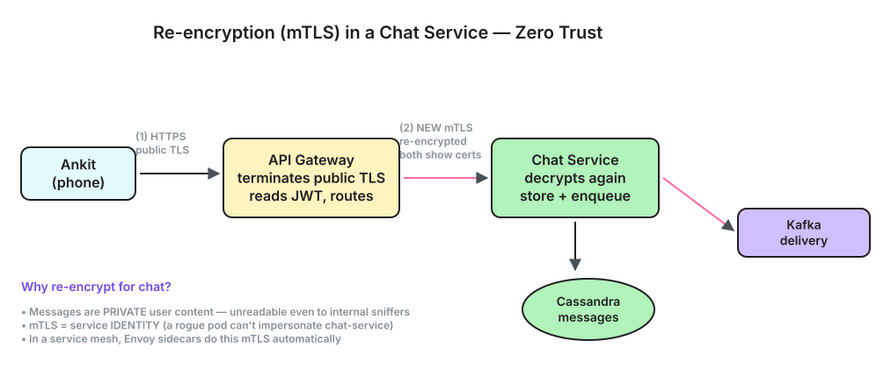

Forward proxy vs reverse proxy, API Gateway internals, authentication/authorization flows, LLD with sample code, and HLD patterns for production systems.
Both types relay traffic through a middle box. The difference is which side they represent and who they hide:
FORWARD PROXY (client-side):
Client knows it's using a proxy. Proxy acts on behalf of CLIENT.
[Client] ──→ [Forward Proxy] ──→ [Internet] ──→ [Server]
↑
Hides client's IP
Caching, filtering, bypass geo-blocks
Examples: Squid, corporate proxies, VPN, browser proxy settings
Use cases: Content filtering, caching, anonymity
REVERSE PROXY (server-side):
Client doesn't know there's a proxy. Proxy acts on behalf of SERVER.
[Client] ──→ [Internet] ──→ [Reverse Proxy] ──→ [Server A]
│ ──→ [Server B]
│ ──→ [Server C]
↑
Hides server topology
Load balancing, SSL termination, caching
Examples: Nginx, HAProxy, Cloudflare, AWS ALB
Use cases: Load balancing, SSL termination, DDoS protection, caching

⬇ Download Interactive Diagram (.excalidraw) ↗ Open in Excalidraw
| Aspect | Forward Proxy | Reverse Proxy |
|---|---|---|
| Sits in front of | Clients | Servers |
| Client aware? | Yes (configured in client) | No (transparent to client) |
| Hides | Client identity from server | Server topology from client |
| Who benefits? | Client (privacy, caching) | Server (security, scaling) |
| Example | Corporate proxy, VPN | Nginx, Cloudflare, ALB |
Without API Gateway:
Mobile App ──→ User Service (auth check in each service)
Mobile App ──→ Order Service (auth check in each service)
Mobile App ──→ Payment Service (auth check in each service)
Web App ──→ User Service (rate limit in each service)
Web App ──→ Order Service (rate limit in each service)
(Every service handles auth, rate limiting, logging independently)
With API Gateway:
Mobile App ─┐
Web App ─┼──→ [API Gateway] ──→ User Service
Partner API─┘ (auth, rate ──→ Order Service
limit, log) ──→ Payment Service
(Cross-cutting concerns handled ONCE at the gateway)

⬇ Download Interactive Diagram (.excalidraw) ↗ Open in Excalidraw
| Responsibility | What It Does | Why at Gateway |
|---|---|---|
| Routing | /api/users/* → User Service, /api/orders/* → Order Service | Single DNS entry for clients |
| Authentication | Validate JWT/API key, reject unauthorized requests | Don't duplicate auth logic in every service |
| Authorization | Check permissions (RBAC/ABAC) for the endpoint | Centralized policy enforcement |
| Rate Limiting | Limit requests per user/IP/API key | Protect backend from abuse |
| SSL Termination | Handle HTTPS, decrypt → forward HTTP internally | Services don't manage certs |
| Request/Response Transform | Add headers, strip fields, version translation | Backward compatibility |
| Load Balancing | Distribute across service instances | Built into routing |
| Caching | Cache GET responses (CDN-like at gateway) | Reduce backend load |
| Circuit Breaking | Stop sending to a failing service | Prevent cascade failures |
| Observability | Access logs, metrics, distributed tracing (trace-id injection) | Centralized visibility |
| IP Whitelisting/WAF | Block malicious IPs, SQL injection, XSS | First line of defense |
"Who are you?"
Verify identity. Input: credentials (password, token, certificate). Output: verified identity (user_id).
"What can you do?"
Check permissions. Input: identity + requested action. Output: allow/deny.
Common Authentication Methods
| Method | How | Pros | Cons |
|---|---|---|---|
| API Key | Static key in header: X-API-Key: abc123 | Simple, good for service-to-service | No expiry, no user context, easily leaked |
| Basic Auth | Authorization: Basic base64(user:pass) | Simple | Credentials sent every request, no session |
| JWT (Bearer Token) | Authorization: Bearer eyJhbG... | Stateless, contains claims, scalable | Can't revoke until expiry (without blocklist) |
| OAuth 2.0 | Delegation framework (access token + refresh token) | Delegated access, standard, third-party auth | Complex flow, multiple round-trips |
| mTLS | Both client and server present certificates | Strongest (cryptographic identity) | Certificate management is hard |
| Session Cookie | Server stores session, client holds cookie | Simple for web apps | Stateful (server stores sessions), CSRF risk |
Authorization Models
| Model | How | Example |
|---|---|---|
| RBAC (Role-Based) | User has roles, roles have permissions | admin can DELETE, viewer can only GET |
| ABAC (Attribute-Based) | Rules based on user/resource/env attributes | "Allow if user.department == resource.department AND time < 6pm" |
| ACL (Access Control List) | Per-resource list of who can do what | File permissions: user1: read, user2: read+write |
| Policy-based (OPA/Cedar) | Externalized policy engine evaluates rules | OPA Rego policies, AWS Cedar |
JWT Structure (3 parts, base64url encoded, dot-separated):
eyJhbGciOiJSUzI1NiJ9.eyJ1c2VyX2lkIjoiMTIzIn0.signature
├─── Header ────┤├──── Payload (Claims) ────┤├─ Signature ─┤
Header (algorithm + type):
{
"alg": "RS256", ← signing algorithm
"typ": "JWT"
}
Payload (claims):
{
"sub": "user-123", ← subject (user ID)
"iss": "auth.myapp.com", ← issuer
"aud": "api.myapp.com", ← audience
"exp": 1717000000, ← expiry (Unix timestamp)
"iat": 1716996400, ← issued at
"roles": ["buyer"], ← custom claim
"email": "ankit@ms.com" ← custom claim
}
Signature:
RS256( base64(header) + "." + base64(payload), PRIVATE_KEY )
How Gateway Validates JWT
Request arrives: Authorization: Bearer eyJ...
Gateway steps:
1. Split token into header.payload.signature
2. Decode header → get algorithm (RS256)
3. Fetch public key from JWKS endpoint (cached):
GET https://auth.myapp.com/.well-known/jwks.json
4. Verify signature using public key
→ If invalid → 401 Unauthorized
5. Check claims:
─ exp > now()? (not expired)
─ iss == expected issuer?
─ aud includes this API?
→ If any fail → 401
6. Extract user_id, roles from payload
7. Forward to backend with headers:
X-User-Id: user-123
X-User-Roles: buyer
NO DATABASE LOOKUP NEEDED — fully stateless verification.

⬇ Download Interactive Diagram (.excalidraw) ↗ Open in Excalidraw
Access Token vs Refresh Token
┌──────────────────────────────────────────────────────────────┐ │ Access Token (JWT) │ Refresh Token │ ├─────────────────────────────┼─────────────────────────────────┤ │ Short-lived (15 min) │ Long-lived (7-30 days) │ │ Sent with every API request │ Sent only to /token/refresh │ │ Stateless (no DB lookup) │ Stored in DB (revocable) │ │ Contains user claims │ Just an opaque ID │ │ If stolen → 15 min damage │ If stolen → revoke in DB │ └─────────────────────────────┴─────────────────────────────────┘ Flow: 1. User logs in → gets access_token (15min) + refresh_token (30d) 2. API calls use access_token 3. After 15 min → access_token expires → 401 4. Client calls POST /token/refresh with refresh_token 5. Server validates refresh_token in DB → issues new access_token 6. If refresh_token is revoked/expired → user must log in again
/token/refresh. Its sole job is to mint fresh short-lived access tokens without making the user log in again.
The access token is stateless and used on every request → keep it short (15 min) so a leak is low-damage, but it can't be revoked early. The refresh token is rarely sent, DB-backed, and revocable — logging out = deleting it from the DB. Short token for speed/scale, long token for convenience + revocation.
OAuth 2.0 Authorization Code Flow (most common for web apps):
┌────────┐ ┌──────────────┐ ┌─────────────┐
│ User │ │ Your App │ │ Auth Server │
│(Browser│ │ (Client) │ │ (Google/ │
│ │ │ │ │ Okta/Auth0)│
└───┬────┘ └──────┬───────┘ └──────┬──────┘
│ │ │
│ 1. Click "Login with Google" │ │
│──────────────────────────────────→│ │
│ │ │
│ │ 2. Redirect to auth server │
│←─────────────────────────────────────────────────────────────→│
│ 302 → https://auth.google.com/authorize? │
│ client_id=xxx&redirect_uri=xxx&scope=openid+email │
│ │ │
│ 3. User logs in + consents │ │
│──────────────────────────────────────────────────────────────→│
│ │ │
│ 4. Redirect back with auth code │ │
│←──────────────────────────────────│←────────────────────────────│
│ 302 → https://yourapp.com/callback?code=AUTH_CODE │
│ │ │
│ │ 5. Exchange code for tokens │
│ │──────────────────────────→│
│ │ POST /token │
│ │ { code, client_secret } │
│ │ │
│ │←──────────────────────────│
│ │ { access_token, id_token, │
│ │ refresh_token } │
│ │ │
│ 6. Set session / return JWT │ │
│←──────────────────────────────────│ │

⬇ Download Interactive Diagram (.excalidraw) ↗ Open in Excalidraw
Simplified API Gateway in Node.js (Express)
const express = require('express');
const jwt = require('jsonwebtoken');
const httpProxy = require('http-proxy-middleware');
const rateLimit = require('express-rate-limit');
const app = express();
const PUBLIC_KEY = fs.readFileSync('public.pem'); // RSA public key
// ═══════════════════════════════════════════════════
// MIDDLEWARE 1: Rate Limiting (per IP)
// ═══════════════════════════════════════════════════
const limiter = rateLimit({
windowMs: 60 * 1000, // 1 minute window
max: 100, // 100 requests per minute per IP
message: { error: 'Rate limit exceeded', retryAfter: '60s' },
keyGenerator: (req) => req.headers['x-api-key'] || req.ip,
});
app.use(limiter);
// ═══════════════════════════════════════════════════
// MIDDLEWARE 2: Authentication (JWT validation)
// ═══════════════════════════════════════════════════
function authenticate(req, res, next) {
// Skip auth for public endpoints
if (req.path.startsWith('/public/')) return next();
const authHeader = req.headers.authorization;
if (!authHeader || !authHeader.startsWith('Bearer ')) {
return res.status(401).json({ error: 'Missing token' });
}
const token = authHeader.slice(7);
try {
const decoded = jwt.verify(token, PUBLIC_KEY, {
algorithms: ['RS256'],
issuer: 'auth.myapp.com',
audience: 'api.myapp.com',
});
req.user = decoded; // { sub, roles, email, exp, ... }
req.headers['x-user-id'] = decoded.sub;
req.headers['x-user-roles'] = decoded.roles.join(',');
next();
} catch (err) {
if (err.name === 'TokenExpiredError') {
return res.status(401).json({ error: 'Token expired' });
}
return res.status(401).json({ error: 'Invalid token' });
}
}
app.use(authenticate);
// ═══════════════════════════════════════════════════
// MIDDLEWARE 3: Authorization (RBAC check)
// ═══════════════════════════════════════════════════
function authorize(...allowedRoles) {
return (req, res, next) => {
const userRoles = req.user.roles || [];
const hasRole = allowedRoles.some(r => userRoles.includes(r));
if (!hasRole) {
return res.status(403).json({ error: 'Insufficient permissions' });
}
next();
};
}
// ═══════════════════════════════════════════════════
// ROUTING: Path-based routing to microservices
// ═══════════════════════════════════════════════════
const ROUTES = {
'/api/users': 'http://user-service:3001',
'/api/orders': 'http://order-service:3002',
'/api/payments': 'http://payment-service:3003',
};
Object.entries(ROUTES).forEach(([path, target]) => {
app.use(path, httpProxy.createProxyMiddleware({
target,
changeOrigin: true,
pathRewrite: { [`^${path}`]: '' },
onProxyReq: (proxyReq, req) => {
// Forward user context to downstream service
proxyReq.setHeader('X-User-Id', req.user?.sub || '');
proxyReq.setHeader('X-User-Roles', req.user?.roles?.join(',') || '');
proxyReq.setHeader('X-Request-Id', req.headers['x-request-id'] || uuid());
},
}));
});
// Admin-only route example
app.delete('/api/users/:id', authorize('admin'), (req, res, next) => next());
app.listen(8080, () => console.log('API Gateway on :8080'));
Class Diagram (LLD)
┌─────────────────────────────────────────────────────────────────┐
│ APIGateway │
├─────────────────────────────────────────────────────────────────┤
│ - routeTable: Map<PathPattern, ServiceURL> │
│ - rateLimiter: RateLimiter │
│ - authenticator: TokenValidator │
│ - authorizer: RBACChecker │
│ - circuitBreakers: Map<ServiceName, CircuitBreaker> │
│ - loadBalancer: LoadBalancer │
├─────────────────────────────────────────────────────────────────┤
│ + handleRequest(req): Response │
│ + route(req): ServiceURL │
└─────────────────────────────────────────────────────────────────┘
│ │ │ │
▼ ▼ ▼ ▼
┌─────────────┐ ┌──────────┐ ┌──────────┐ ┌──────────────┐
│ RateLimiter │ │TokenValid.│ │RBACChecker│ │CircuitBreaker│
├─────────────┤ ├──────────┤ ├──────────┤ ├──────────────┤
│-store: Redis│ │-publicKey │ │-policies │ │-state: ENUM │
│-window: int │ │-jwksUrl │ │-rolePerms│ │-failCount │
│-maxReqs: int│ │ │ │ │ │-threshold │
├─────────────┤ ├──────────┤ ├──────────┤ ├──────────────┤
│+isAllowed() │ │+validate()│ │+check() │ │+canExecute() │
│+increment() │ │+decode() │ │+enforce()│ │+recordFail() │
└─────────────┘ └──────────┘ └──────────┘ └──────────────┘
┌──────────────────┐
│ Cloudflare / │
│ AWS CloudFront │ ← CDN + DDoS protection
│ (Edge Layer) │
└────────┬─────────┘
│
┌────────▼─────────┐
│ Global Load │
│ Balancer (L4) │ ← AWS NLB / GCP LB
│ (TCP/IP level) │
└────────┬─────────┘
│
┌───────────────────┼───────────────────┐
▼ ▼ ▼
┌─────────────────┐ ┌─────────────────┐ ┌─────────────────┐
│ API Gateway │ │ API Gateway │ │ API Gateway │
│ Instance 1 │ │ Instance 2 │ │ Instance 3 │
│ (Kong/Envoy) │ │ (Kong/Envoy) │ │ (Kong/Envoy) │
│ │ │ │ │ │
│ ┌─────────────┐│ │ ┌─────────────┐│ │ ┌─────────────┐│
│ │ Auth Plugin ││ │ │ Auth Plugin ││ │ │ Auth Plugin ││
│ │ Rate Limit ││ │ │ Rate Limit ││ │ │ Rate Limit ││
│ │ Routing ││ │ │ Routing ││ │ │ Routing ││
│ │ Logging ││ │ │ Logging ││ │ │ Logging ││
│ └─────────────┘│ │ └─────────────┘│ │ └─────────────┘│
└───────┬─────────┘ └───────┬─────────┘ └───────┬─────────┘
│ │ │
└───────────────────┼───────────────────┘
│
┌────────────────────┼────────────────────┐
▼ ▼ ▼
┌─────────────────┐ ┌─────────────────┐ ┌─────────────────┐
│ User Service │ │ Order Service │ │ Payment Service │
│ (K8s pods) │ │ (K8s pods) │ │ (K8s pods) │
└─────────────────┘ └─────────────────┘ └─────────────────┘
Shared Infrastructure:
┌──────────────────────────────────────────────────────────────┐
│ Redis (rate limit counters, token blocklist, session cache) │
│ PostgreSQL (API key store, route config, audit logs) │
│ JWKS endpoint (public keys for JWT verification, cached) │
│ Prometheus + Grafana (metrics: latency, error rate, RPS) │
│ ELK / Datadog (access logs, distributed tracing) │
└──────────────────────────────────────────────────────────────┘

⬇ Download Interactive Diagram (.excalidraw) ↗ Open in Excalidraw
Request Flow Through Production Gateway
Incoming HTTPS request:
│
▼
1. TLS Termination (decrypt HTTPS → HTTP)
│
▼
2. IP Check (WAF rules, geo-blocking, IP blocklist)
│ → Block → 403
│
▼
3. Rate Limiting
│ → Check Redis: INCR rate:{api_key}:{window}
│ → If > limit → 429 Too Many Requests
│
▼
4. Authentication
│ → Extract Bearer token from Authorization header
│ → Verify JWT signature (cached public key)
│ → Check expiry, issuer, audience
│ → If invalid → 401 Unauthorized
│
▼
5. Authorization
│ → Extract roles/scopes from JWT claims
│ → Match against route's required permissions
│ → If forbidden → 403 Forbidden
│
▼
6. Request Transformation
│ → Add X-User-Id, X-Request-Id headers
│ → Strip sensitive headers (Authorization)
│ → API version translation if needed
│
▼
7. Route Resolution
│ → Match path to upstream service
│ → Select instance (round-robin / least-connections)
│
▼
8. Circuit Breaker Check
│ → If service is in OPEN state → 503 (fast fail)
│
▼
9. Proxy to Upstream Service
│ → Forward request, wait for response
│
▼
10. Response Transformation
│ → Add CORS headers, security headers
│ → Strip internal headers
│ → Cache response if cacheable
│
▼
11. Logging & Metrics
│ → Log: method, path, status, latency, user_id
│ → Emit metric: gateway_request_duration_seconds
│ → Propagate trace-id for distributed tracing
│
▼
Return response to client

⬇ Download Interactive Diagram (.excalidraw) ↗ Open in Excalidraw
Sliding Window Counter (most common at gateway level):
Key: rate_limit:{user_id}:{current_minute}
Key: rate_limit:{user_id}:{previous_minute}
Weighted count = prev_count * overlap% + curr_count
If weighted > limit → reject (429)
Example (limit = 100 req/min):
Current time: 12:01:25 (25s into current window)
Previous window (12:00): 80 requests
Current window (12:01): 30 requests
Weighted = 80 * (35/60) + 30 = 46.7 + 30 = 76.7
76.7 < 100 → ALLOW
Implementation in Redis:
MULTI
INCR rate:{user_id}:202605291201
EXPIRE rate:{user_id}:202605291201 120
EXEC
| Algorithm | Pros | Cons | Use At Gateway? |
|---|---|---|---|
| Fixed Window | Simple, O(1) | Boundary burst (2x at window edge) | Basic use |
| Sliding Window Log | Precise | Memory heavy (stores all timestamps) | Rarely |
| Sliding Window Counter | Accurate + memory efficient | Slight approximation | Most common |
| Token Bucket | Allows burst, smooth rate | Slightly complex | AWS, Stripe |
| Leaky Bucket | Smoothest output rate | No burst allowed | Network QoS |
| Feature | Kong | Nginx | AWS API Gateway | Envoy |
|---|---|---|---|---|
| Type | Full API Gateway | Reverse proxy + basic gateway | Managed (serverless) | Service proxy (L7) |
| Plugin ecosystem | Rich (auth, rate limit, transform) | Limited (need Lua/modules) | Built-in + Lambda | Filters (C++/Wasm) |
| Performance | ~30K RPS/instance | ~100K RPS/instance | 10K RPS (soft limit) | ~50K RPS/instance |
| Config | Admin API + DB (Postgres) | Static config files | Console/CloudFormation | xDS API (dynamic) |
| Service mesh | Kong Mesh (optional) | No | No | Istio sidecar |
| Best for | API management at scale | Simple reverse proxy, static routing | Serverless, AWS-native | Service mesh, K8s, gRPC |
| Ops burden | Medium | Low | Zero (managed) | High (but powerful) |
Backend for Frontend (BFF)
Problem: Mobile app needs different data shape than web app.
Single API gateway returns too much/too little.
Solution: One gateway per client type.
Mobile App ──→ [Mobile BFF Gateway] ──→ aggregates from services
(returns minimal JSON,
combines 3 APIs into 1 call)
Web App ──→ [Web BFF Gateway] ──→ aggregates from services
(returns rich JSON,
includes more fields)
Partner ──→ [Partner Gateway] ──→ different auth, rate limits

⬇ Download Interactive Diagram (.excalidraw) ↗ Open in Excalidraw
Service Mesh (Envoy Sidecar)
Without service mesh:
Service A ──(direct HTTP)──→ Service B
(each service handles: retries, circuit breaking, mTLS, tracing)
With service mesh (Istio + Envoy):
┌──────────────────────┐ ┌──────────────────────┐
│ Pod A │ │ Pod B │
│ ┌────────┐ ┌──────┐ │ │ ┌──────┐ ┌────────┐ │
│ │Service │→│Envoy │─┼─────┼→│Envoy │→│Service │ │
│ │ A │ │proxy │ │ │ │proxy │ │ B │ │
│ └────────┘ └──────┘ │ │ └──────┘ └────────┘ │
└──────────────────────┘ └──────────────────────┘
↕ ↕
┌──────────────────────────────────────┐
│ Control Plane (Istio / Linkerd) │
│ ─ mTLS certificate management │
│ ─ Traffic policies (retries, timeout)│
│ ─ Observability (metrics, traces) │
└──────────────────────────────────────┘
Gateway handles NORTH-SOUTH traffic (client → cluster)
Service Mesh handles EAST-WEST traffic (service → service)

⬇ Download Interactive Diagram (.excalidraw) ↗ Open in Excalidraw
TLS Termination + Re-encryption (mTLS) in a Chat Service

⬇ Download Interactive Diagram (.excalidraw) ↗ Open in Excalidraw